Rodział 4 Eksploracyjna analiza danych - geostatystyka
4.1 Interpolacja
4.1.1 Modele deterministyczne
- Parametry tych modeli są zazwyczaj ustalane w oparciu o funkcję odległości lub powierzchni. Brakuje również szacunków na temat oceny błędu modelu. Np:
- Funkcje wielomianowe
- Funkcje sklejane (ang. splines)
- Triangulacje
- IDW (ang. Inverse Distance Weighted)
http://neondataskills.org/Data-Workshops/ESA15-Going-On-The-Grid-Spatial-Interpolation-Basics/
4.1.2 Modele deterministyczne
library('fields')## Loading required package: methods## Loading required package: spam## Loading required package: grid## Spam version 1.3-0 (2015-10-24) is loaded.
## Type 'help( Spam)' or 'demo( spam)' for a short introduction
## and overview of this package.
## Help for individual functions is also obtained by adding the
## suffix '.spam' to the function name, e.g. 'help( chol.spam)'.##
## Attaching package: 'spam'## The following objects are masked from 'package:base':
##
## backsolve, forwardsolve## Loading required package: maps##
## # ATTENTION: maps v3.0 has an updated 'world' map. #
## # Many country borders and names have changed since 1990. #
## # Type '?world' or 'news(package="maps")'. See README_v3. #library('sp')
library('raster')
library('gstat')
library('rgdal')## rgdal: version: 1.1-3, (SVN revision 594)
## Geospatial Data Abstraction Library extensions to R successfully loaded
## Loaded GDAL runtime: GDAL 1.11.2, released 2015/02/10
## Path to GDAL shared files: /usr/share/gdal/1.11
## Loaded PROJ.4 runtime: Rel. 4.8.0, 6 March 2012, [PJ_VERSION: 480]
## Path to PROJ.4 shared files: (autodetected)
## Linking to sp version: 1.2-1wolin_lato_los <- read.csv('data/Wolin_TPZ_p_lato_750losN.csv', na.strings=-999.00)
coordinates(wolin_lato_los) <- ~X+Y
proj4string(wolin_lato_los) <- '+init=epsg:32633'
ras <- raster('data/siatka_raster.tif', level=0)
crs(ras) <- proj4string(wolin_lato_los)
grid <- as(ras, "SpatialGridDataFrame")
poligon <- readOGR("data", "wolin_polygon")## OGR data source with driver: ESRI Shapefile
## Source: "data", layer: "wolin_polygon"
## with 1 features
## It has 11 fields### Modele deterministyczne | Funkcje wielomianowe
wielomian_1 <- gstat(formula=X2002.08.20_TPZ~1, data=wolin_lato_los, degree=1)
wielomian_1_pred <- predict(wielomian_1, newdata=grid)## [ordinary or weighted least squares prediction]spplot(wielomian_1_pred[1], contour=TRUE,main="Powierzchnia trendu - wielomian pierwszego stopnia")
wielomian_2 <- gstat(formula=X2002.08.20_TPZ~1, data=wolin_lato_los, degree=2)
wielomian_2_pred <- predict(wielomian_2, newdata=grid)## [ordinary or weighted least squares prediction]spplot(wielomian_2_pred[1], contour=TRUE,main="Powierzchnia trendu - wielomian drugiego stopnia")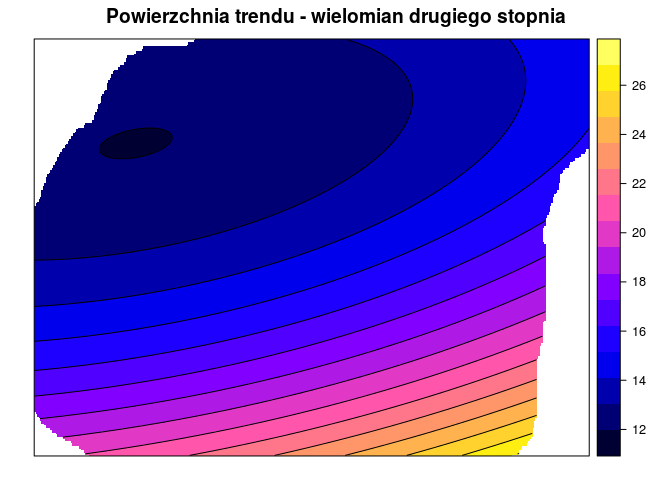
wielomian_3 <- gstat(formula=X2002.08.20_TPZ~1, data=wolin_lato_los, degree=3)
wielomian_3_pred <- predict(wielomian_3, newdata=grid)## [ordinary or weighted least squares prediction]spplot(wielomian_3_pred[1], contour=TRUE,main="Powierzchnia trendu - wielomian trzeciego stopnia")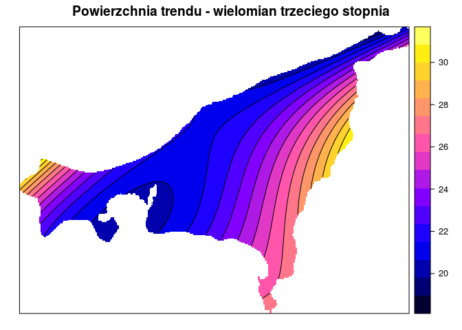
4.1.3 Modele deterministyczne | Funkcje sklejane
tps <- Tps(coordinates(wolin_lato_los), wolin_lato_los@data$X2002.08.20_TPZ)
spline <- interpolate(ras, tps)
spline <- mask(spline, ras)
spplot(spline, contour=TRUE , main="Funkcje sklejane")
4.1.4 Modele deterministyczne | Triangulacje (Thiessen)
library('dismo')
voronoi_interp <- voronoi(wolin_lato_los)## Loading required namespace: deldir##
## PLEASE NOTE: The components "delsgs" and "summary" of the
## object returned by deldir() are now DATA FRAMES rather than
## matrices (as they were prior to release 0.0-18).
## See help("deldir").
##
## PLEASE NOTE: The process that deldir() uses for determining
## duplicated points has changed from that used in version
## 0.0-9 of this package (and previously). See help("deldir").voronoi_interp <- intersect(poligon, voronoi_interp)## Loading required namespace: rgeos## Warning in intersect(poligon, voronoi_interp): non identical CRSspplot(voronoi_interp, "X2002.08.20_TPZ", contour=TRUE, main="Poligony Voronoi'a")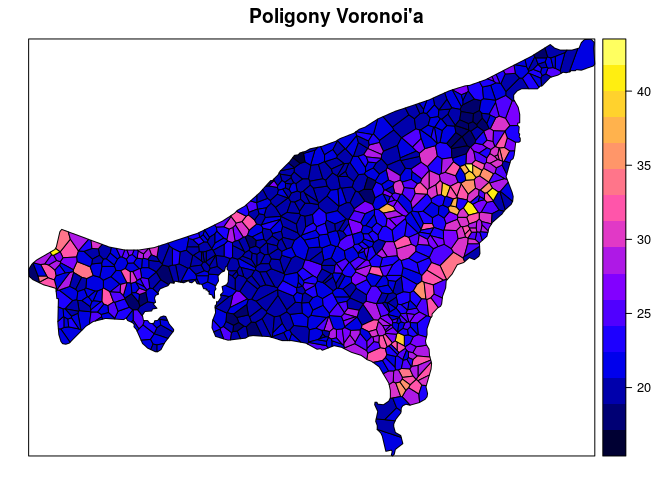
4.1.5 Modele deterministyczne | IDW
idw_wolin <- idw(X2002.08.20_TPZ~1, wolin_lato_los, grid, idp=2)## [inverse distance weighted interpolation]spplot(idw_wolin, 'var1.pred', contour=TRUE, main="IDW")
4.1.6 Modele deterministyczne | Porównanie
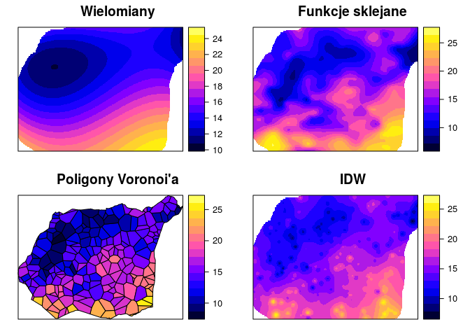
4.1.7 Modele statystyczne
- Parametry modeli są określane w oparciu o teorię prawdopodobieństwa. Dodatkowo wynik estymacji zawiera oszacowanie błędu. Np.:
- Kriging
- Modele regresyjne
- Modele bayesowe
- Modele hybrydowe
4.2 Geostatystyka - prolog
4.2.1 Geostatystyka
- Zbiór narzędzi statystycznych uwzględniających w analizie danych ich przestrzenną i czasową lokalizację, a opartych o teorię funkcji losowych.
4.2.2 Geostatystyka | Funkcje
- Identyfikacja i modelowanie struktury przestrzennej/czasowej zjawiska
- Estymacja - szacowanie wartości badanej zmiennej w nieopróbowanym miejscu i/lub momencie czasu
- Symulacja - generowanie alternatywnych obrazów, które honorują wyniki pomiarów i strukturę przestrzenną/czasową zjawiska
- Optymalizacja próbkowania/sieci pomiarowej
4.2.3 Geostatystyczna analiza danych

4.2.4 Geostatystyka | Dane wejściowe
- Wystarczająca duża liczba punktów (minimalnie >30, ale zazwyczaj więcej niż 100/150)
- Są reprezentatywne
- Są niezależne
- Były stworzone używając stałej metodyki
- Są wystarczająco dokładne
4.2.5 Geostatystyka | Podstawowe etapy
- Zaprojektowanie sposobu (typu) próbkowania oraz organizacji zadań
- Zebranie danych, analiza labolatoryjna
- Wstepna eksploracja danych, ocena ich jakości
- Modelowanie semiwariogramów na podstawie dostępnych danych
- Estymacja badanej cechy
- Porównanie i ocena modeli
- Stworzenie wynikowego produktu i jego dystrybucja
4.3 Przestrzenna kowariancja, korelacja i semiwariancja
4.3.1 Przestrzenna kowariancja, korelacja i semiwariancja | Założenia
- Przestrzennej ciągłości - przestrzenna korelacja między zmienny w dwóch lokalizacjach zależy tylko od ich odległości (oraz czasem kierunku), lecz nie od tego gdzie są one położone
- Stacjonarności - średnia i wariancja są stałe na całym badanym obszarze
4.3.2 Przestrzenna kowariancja, korelacja i semiwariancja
- \(u\) - wektor współrzędnych
- \(z(u)\) - badana zmienna jako funkcja położenia - inaczej określany jako ogon (ang. tail)
- \(h\) - lag - odstęp pomiędzy dwoma lokalizacjami
- \(z(u+h)\) - wartość badanej zmiennej odległej o odstęp \(h\) - inaczej określany jako głowa (ang. head)
4.3.3 Przestrzenna kowariancja, korelacja i semiwariancja
- Kowariancja i korelacja to miary podobieństwa pomiędzy dwoma zmiennymi
- Przenosząc to na aspekt przestrzenny, badamy jedną zmienną ale pomiędzy dwoma punktami odległymi od siebie o pewien dystans (okreslany jako lag)
- W efekcie otrzymujemy miarę podobieństwa pomiędzy wartością głowy i ogona
- Trzecią miarę charakteryzującą relację między obserwacjami odległymi o kolejne odstępy jest semiwariancja
- Z praktycznego punktu widzenia, semiwariogram jest preferowaną miarą relacji przestrzennej, ponieważ wykazuje tendencję do lepszego wygładzania danych niż funkcja kowariancji
- Dodatkowo, semiwariogram jest mniej wymagający obliczeniowo
- Jednocześnie, dla potrzeb interpretacji relacji kowarancja i korelacja przestrzenna nadaje się nie gorzej niż semiwariancja
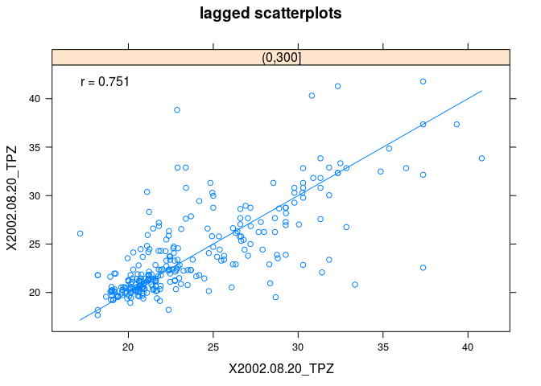
4.3.4 Wykres rozrzutu z przesunięciem
hscat(X2002.08.20_TPZ~1, wolin_lato_los, breaks=seq(0, 1350, by=150))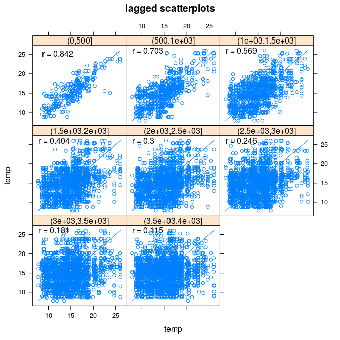
4.3.5 Autokowariancja
- Autokowariancja pokazuje jak mocno są ze sobą powiązane przestrzennie wartości pary obserwacji odległych od siebie o kolejne przedziały
kowario <- variogram(X2002.08.20_TPZ~1, wolin_lato_los, covariogram = TRUE)
plot(kowario)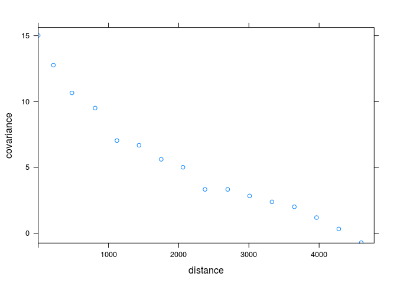
4.3.6 Autokorelacja
- Autokorelogram jest wykresem pokazującym jedną z miar autokorelacji (np. I Morana lub C Geary’ego) w stosunku do odległości
library('pgirmess')
library('ggplot2')
wsp <- coordinates(wolin_lato_los)
kor <- correlog(wsp, wolin_lato_los$X2002.08.20_TPZ)
kor <- as.data.frame(kor)
ggplot(kor, aes(dist.class, coef)) + geom_smooth(linetype=0) + geom_line() + geom_point(size=5)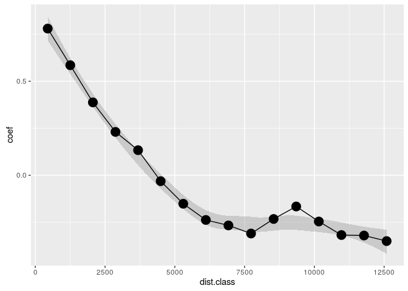
4.3.7 Semiwariancja
- Zmienność przestrzenna może być określona za pomocą semiwariancji. Jest to połowa średniej kwadratu różnicy pomiędzy wartościami badanej zmiennej w dwóch lokalizacjach odległych o wektor \(h\) \[ \gamma(h) = \frac{1}{2}E[(z(s) - z(s+h))^2] \]
4.3.8 Określenie występowania autokorelacji przestrzennej | Chmura semiwariogramu
- Jeżeli w badanej próbie mamy \(n\) obserwacji oznacza to, że możemy zaobserwować \(\frac{1}{2}n(n-1)\) par obserwacji
- Każda para obserwacji daje nam informacje o semiwariancji występującej wraz z odległością
- Semiwariancję można zaprezentować na wykresie zwanym chumrą semiwariogramu
4.3.9 Semiwariancja | Przykładowe obliczenia
odl <- dist(coordinates(wolin_lato_los)[c(1, 2), ])
gamma <- 0.5 * (wolin_lato_los$X2002.08.20_TPZ[1] - wolin_lato_los$X2002.08.20_TPZ[2])^2
gamma## [1] 36.401014.3.10 Określenie występowania autokorelacji przestrzennej | Chmura semiwariogramu
library('gstat')
vario_cloud <- variogram(X2002.08.20_TPZ~1, wolin_lato_los, cloud=TRUE)
plot(vario_cloud) 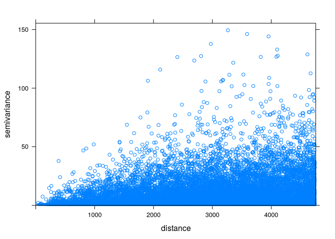
4.3.11 Określenie występowania autokorelacji przestrzennej | Chmura semiwariogramu
vario_cloud_sel <- plot(variogram(X2002.08.20_TPZ~1, wolin_lato_los, cloud=TRUE), digitize=TRUE)
plot(vario_cloud_sel, wolin_lato_los) 4.3.12 Semiwariogram | Charakterystyka struktury przestrzennej
- Semiwariogram to wykres pokazujący relację pomiędzy odległością a semiwariancją
- Jest to uśrednieniem semiwariancji dla kolejnych odstępów (lagów)
- W oparciu o semiwariogram empiryczny możemy następnie dopasować do niego model/e
\[ \hat{\gamma}(h) = \frac{1}{2N(h)}\sum_{i=1}^{N(h)}(z(s_i) - z(s_i+h))^2 \]
gdzie \(N(h)\) oznacza liczbę par punktów w odstępie \(h\)
4.3.13 Semiwariogram
- Nugget - efekt nuggetowy - pozwala na określenie błędu w danych wejściowych oraz zmienności na dystansie krótszym niż pierwszy odstęp
- Sill - semiwariancja progowa - oznacza wariancję badanej zmiennej
- Range - zasięg - to odległość do której istnieje przestrzenna korelacja
4.3.14 Semiwariogram | Rules of thumb
- W każdym odstępie powinno się znaleźć co najmniej 30 par punktów
- Maksymalny zasięg semiwariogramu (ang. cutoff distance) to 1/2 pierwiastka z badanej powierzchni (inne źródła mówią o połowie z przekątnej badanego obszaru/jednej trzeciej)
- Liczba odstępów powinna nie być mniejsza niż 10
- Optymalnie maksymalny zasięg semiwariogramu powinien być dłuższy o 10-15% od zasięgu zjawiska
- Optymalnie odstępy powinny być jak najbliżej siebie i jednocześnie nie być chaotyczne
- Warto metodą prób i błędów określić optymalne parametry semiwariogramu
- Należy określić czy zjawisko wykazuje anizotropię przestrzenną
4.3.15 Semiwariogram | Obliczenia pomocnicze
- Liczba par obserwacji
0.5*length(wolin_lato_los)*(length(wolin_lato_los)-1)## [1] 280875- Połowa pierwiastka powierzchni
pow <- area(poligon)
as.vector(0.5*sqrt(pow))## [1] 8086.384- Powierzchnia zajmowana przez jedną próbkę
pow_pr <- area(poligon)/length(wolin_lato_los)
pow_pr## 0
## 348744.6- Średnia odległość między punktami
sqrt(pow_pr)## 0
## 590.5464.3.16 Semiwariogram | Maksymalny zasięg semiwariogramu (ang. Cutoff distance)
- Maksymalny zasięg semiwariogramu (ang. Cutoff distance) jest domyślnie wyliczany w pakiecie gstat jako 1/3 z najdłuższej przekątnej badanego obszaru
vario_par <- variogram(X2002.08.20_TPZ~1, wolin_lato_los)
vario_par## np dist gamma dir.hor dir.ver id
## 1 2489 586.6262 9.403402 0 0 var1
## 2 6419 1356.0526 12.479666 0 0 var1
## 3 9455 2209.0161 14.698134 0 0 var1
## 4 11765 3079.7299 15.121831 0 0 var1
## 5 13604 3951.9182 15.237225 0 0 var1
## 6 14898 4827.0845 15.610348 0 0 var1
## 7 15759 5695.0007 16.254005 0 0 var1
## 8 16230 6572.6776 17.197791 0 0 var1
## 9 15903 7444.9323 18.396612 0 0 var1
## 10 15958 8323.4239 19.334907 0 0 var1
## 11 15848 9199.8893 19.961577 0 0 var1
## 12 15388 10074.5949 21.121819 0 0 var1
## 13 14428 10950.7884 22.549906 0 0 var1
## 14 13438 11816.4479 22.366048 0 0 var1
## 15 12138 12695.1130 22.716514 0 0 var1plot(vario_par, plot.numbers=TRUE)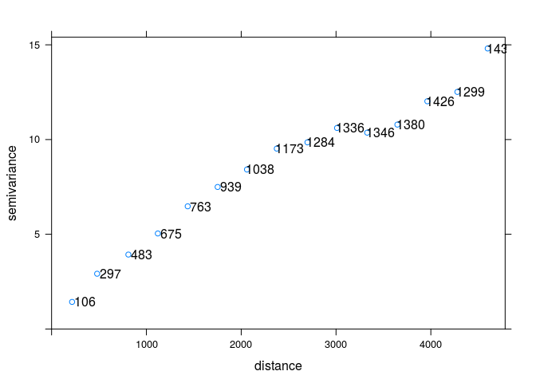
vario_par <- variogram(X2002.08.20_TPZ~1, wolin_lato_los, cutoff = 8000)
plot(vario_par)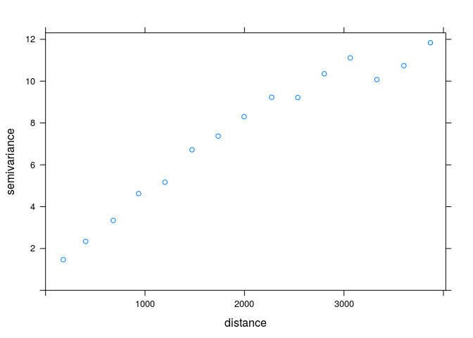
4.3.17 Semiwariogram | Odległość między przedziałami (ang, Interval width )
- Domyślnie to maksymalny zasięg semiwariogramu podzielony przez 15 dahe odległość między przedziałami (ang, Interval width )
vario_par <- variogram(X2002.08.20_TPZ~1, wolin_lato_los, cutoff = 1000, width = 250)
plot(vario_par)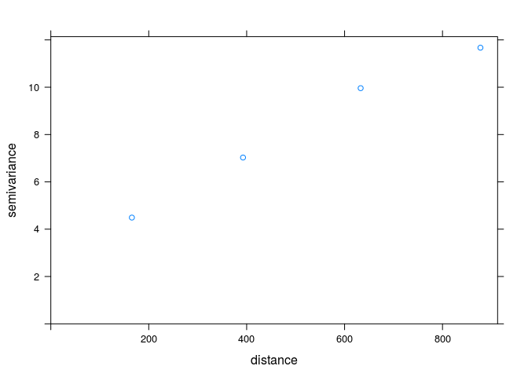
4.4 Anizotropia
4.4.1 Anizotropia struktury przestrzennej
- W wielu rzeczywistych sytuacjach, wartość cechy zależy nie tylko od odległości, ale także od kierunku
4.4.2 Mapa semiwariogramu
- Mapa semiwariogramu (powierzchnia semiwariogramu) służy do określenia czy struktura przestrzenna zjawiska posiada anizotropię, a jeżeli tak to w jakim kierunku
- Na podstawie mapy semiwariogramu identyfikuje się parametry potrzebne do zbudowania semiwariogramów kierunkowych
vario_map <- variogram(X2002.08.20_TPZ~1, wolin_lato_los, cutoff=12000, width=800, map=TRUE)
# plot(vario_map, threshold=30) # co najmniej 30 par punktów4.4.3 Mapa semiwariogramu | 3D
library('rasterVis')
plot3D(raster(vario_map$map), col=rainbow)4.4.4 Semiwariogramy kierunkowe | Kierunki
- W przypadku, gdy zjawisko wykazuje anizotropię przestrzenną, możliwe jest stworzenie semiwariogramów dla różnych wybranych kierunków
- Przykładowo, dla argumentu alpha = c(0, 45, 90, 135) cztery główne kierunki to 0, 45, 90 i 135 stopni. Oznacza to, że dla kierunku 45 stopni brane pod uwagę będą wszystkie pary punktów pomiędzy 22,5 a 67,5 stopnia.
vario_kier <- variogram(X2002.08.20_TPZ~1, wolin_lato_los, alpha = c(0, 45, 90, 135))
plot(vario_kier)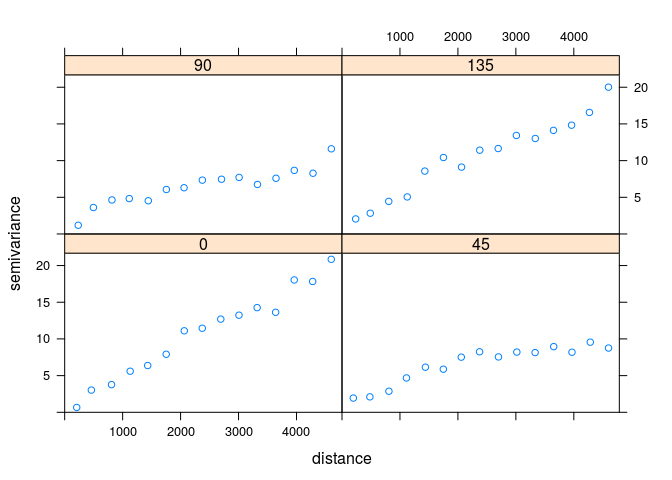
4.4.5 Semiwariogramy kierunkowe | Kierunki
vario_kier <- variogram(X2002.08.20_TPZ~1, wolin_lato_los, alpha = c(60, 105, 150, 195))
plot(vario_kier)
4.5 Krossemiwariogramy
4.5.1 Krossemiwariogramy
- Krossemiwariogram jest to wariancja różnicy pomiędzy dwiema zmiennymi w dwóch lokalizacjach
- Wyliczając Krossemiwariogram otrzymujemy empiryczne semiwatiogramy dla dwóch badanych zmiennych oraz kroswariogram dla kombinacji dwóch zmiennych
- Krossemiwariogram znajduje swoje zastosowanie w technice zwanej kokrigingiem
4.5.2 Krossemiwariogramy
library('sp')
wolin_lato_los <- read.csv('data/Wolin_TPZ_p_lato_750losN.csv', na.strings=-999.00)
coordinates(wolin_lato_los) <- ~X+Y
proj4string(wolin_lato_los) <- '+init=epsg:32633'
wolin_lato_los_255 <- wolin_lato_los[!is.na(wolin_lato_los$X1999.09.13_TPZ), ]
wolin_lato_los_750 <- wolin_lato_los
library('gstat')
g <- gstat(NULL, id="TPZ1999", form = X1999.09.13_TPZ~1, data = wolin_lato_los_255)
g <- gstat(g, id="TPZ2000", form = X2002.08.20_TPZ~1, data = wolin_lato_los_750)
g## data:
## TPZ1999 : formula = X1999.09.13_TPZ`~`1 ; data dim = 255 x 9
## TPZ2000 : formula = X2002.08.20_TPZ`~`1 ; data dim = 750 x 9plot(variogram(g))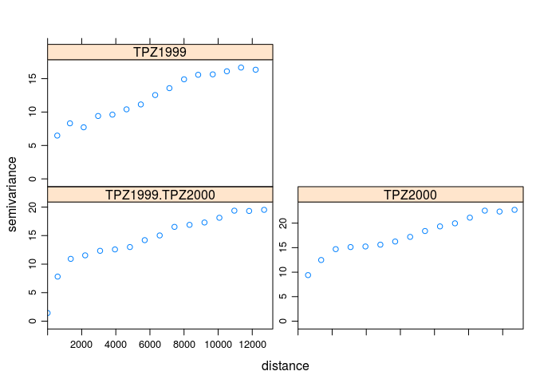
4.5.3 Krossemiwariogramy
# plot(variogram(g, map=TRUE, cutoff=12000, width=800))
plot(variogram(g, alpha = c(60, 105, 150, 195)))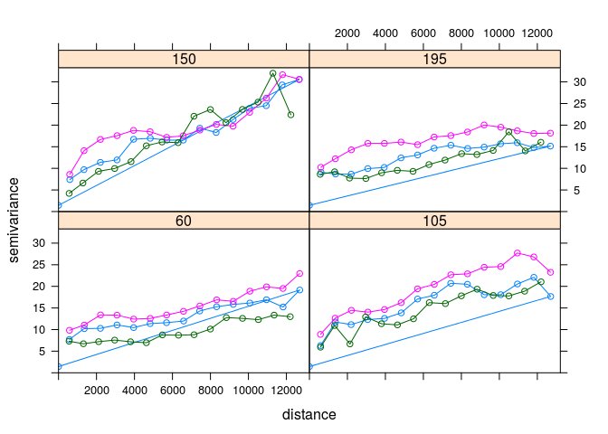